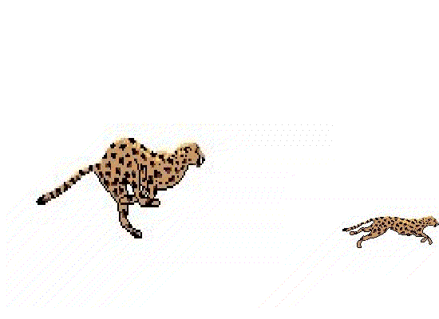

2015-2016 第二学期八年级Flash动画教学设计
作者：TeliuTe 来源：基础教程网
四、 返回目录 下一课
（一）教学设计
1、学习目标：
2、注意事项：绕过弯来，既不要跳也不要落，一楼过了二楼
3、教学过程：
1）教师准备学案和板书；
2）学生整队进入，开机抄黑板上笔记；
3）教师讲解板书演示操作；
4）学生打指法、日志、完成操作；
5）教师打勾记录学生指法成绩，检查日志和操作；
注：学生抄完笔记就开始打指法、日志，老师讲完后再继续完成；
操作图示：

（二）板书设计（课堂笔记）、课后记
35.04学会库和元件
1.学生网站，青草园，猎豹图片
2.点文件，导入到库
3.插入，元件，猎豹，一帧一帧
4.返回场景，拖出猎豹元件
第4课 学会库和元件
1.学生网站，青草园，猎豹，下载，提取
2.文件，导入到库，下载，lb，框选
3.插入，新建元件，右边拖入，插空白
4.返回场景1，右边猎豹元件2个
5.调大小，保存，导出，上传
素材-->元件-->场景
--
2016年03月08日 星期二 12:42
--
按照顺序，素材做元件，元件做场景
一层一层制作，抄笔记的时候把新词语过一下，像库、元件，导入这些
--
找下载有绕的，向上退一层，有选成影片剪辑的，要做成图片元件
有做好元件，又把素材拖到场景里的，
--
2班发现错误第一个想法是找人，不是找解决办法，啼笑皆非。。
看完老师演示把难的地方挑出来
--
以后都用元件做动画，场景用元件来组合，不再用素材
准备素材，用素材做元件，用元件做场景
返回目录 下一课
本教程由86团学校TeliuTe制作|著作权所有
基础教程网：http://teliute.org/
美丽的校园……
转载和引用本站内容，请保留作者和本站链接。